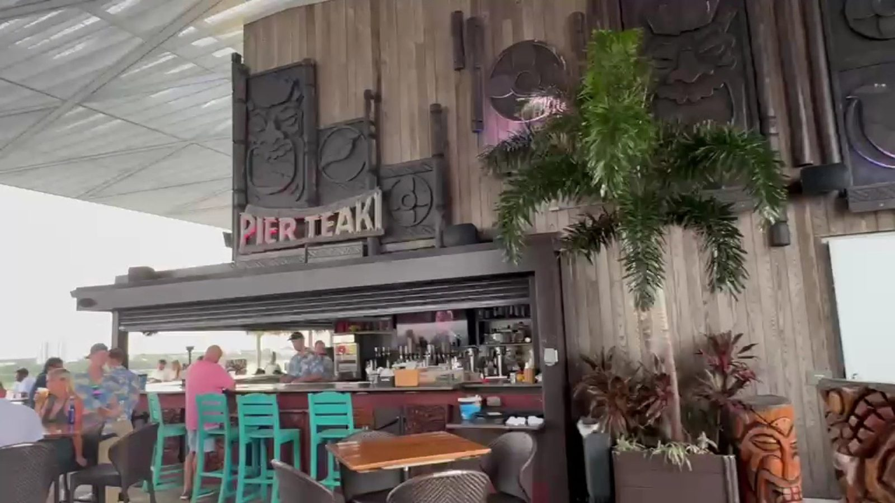

Starters
Crab cakes and coconut shrimp, made to share.
Teak · Treasure Island
Teak serves Treasure Island from St. Petersburg.
Coming from Treasure Island? Teak is in St. Petersburg, at the end of the St. Pete Pier. Seafood, Cuban sandwiches and cocktails with bay views.
What to order
Starters to share, plates and the rooftop bar.
Crab cakes and coconut shrimp, made to share.

Cuban sandwiches and seafood plates.

Upstairs at Pier Teaki, the rooftop bar.
4.4 ★ · 3099 Google reviews
I was pleasantly surprised at the service and the food at this restaurant. I figured the views were pretty stunning even on a rainy day and figure it would be a tourist trap with outlandish prices and meh food. I was wrong to assume. The service was fantastic. The service was fantastic. Our waitress was VERY ATTENTIVE AND FRIENDLY. I believe her name was Mama D.
This restaurant was beautiful!! The fact that it’s out on a pier in the Tampa bay is so fun! Depending on the time you go, you can see the sunset! It was fun walking to and from the restaurant. The service here was lovely and the food was fun and very good! We had such a nice time even though we were pretty full from the ice cream festival we had just come from.
Beautiful views! Decent food. Fun cocktails. Stacey upstairs bartender is super happy and fun. Great at making suggestions. Jacob on the level four teaki is funny charming and knowledgeable. Ashley was very nice as well. This is a must walk and sea for yourself if only for fun peeps and bevs👍😁🌊🍹🍸🍻🥂
I had an exceptional experience during brunch. The culinary offerings were outstanding, complemented by the excellent…